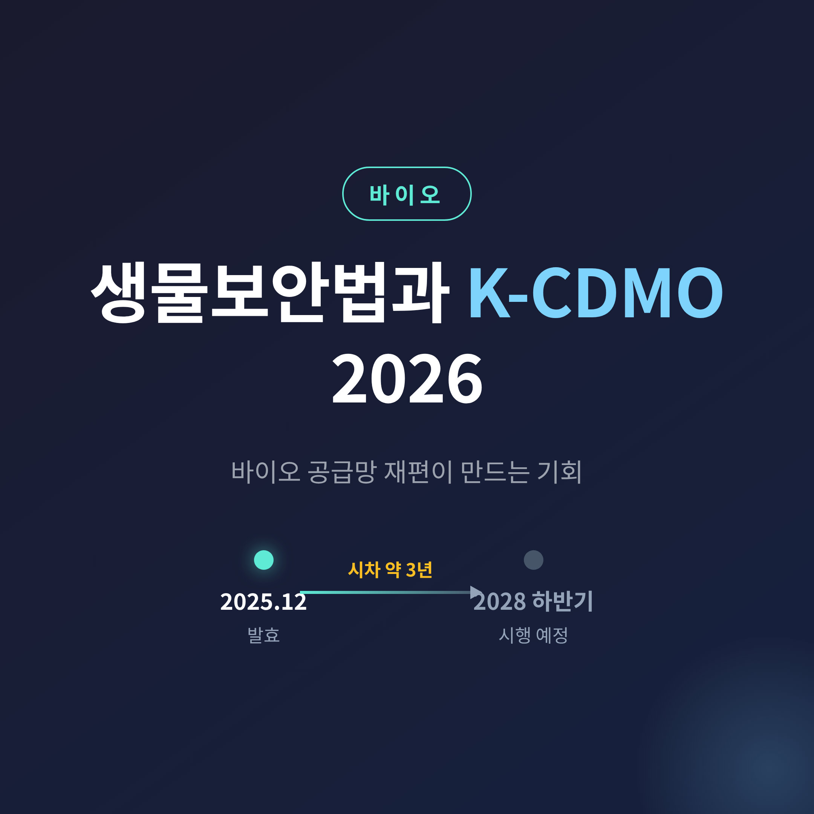
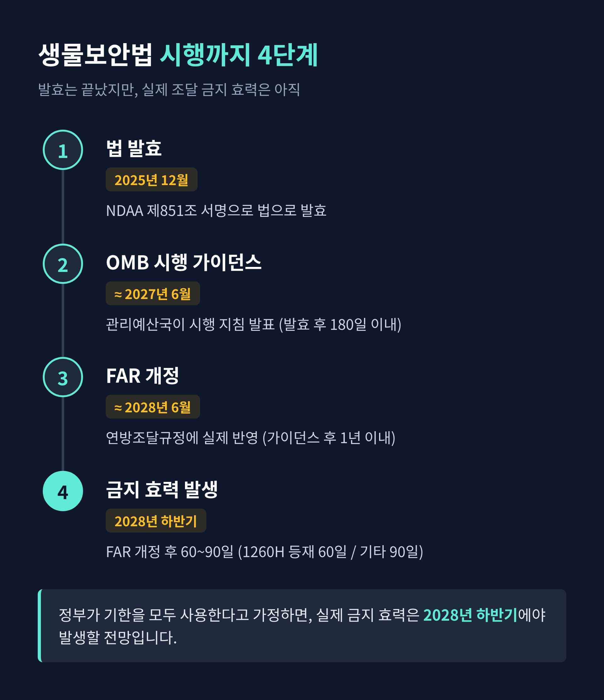
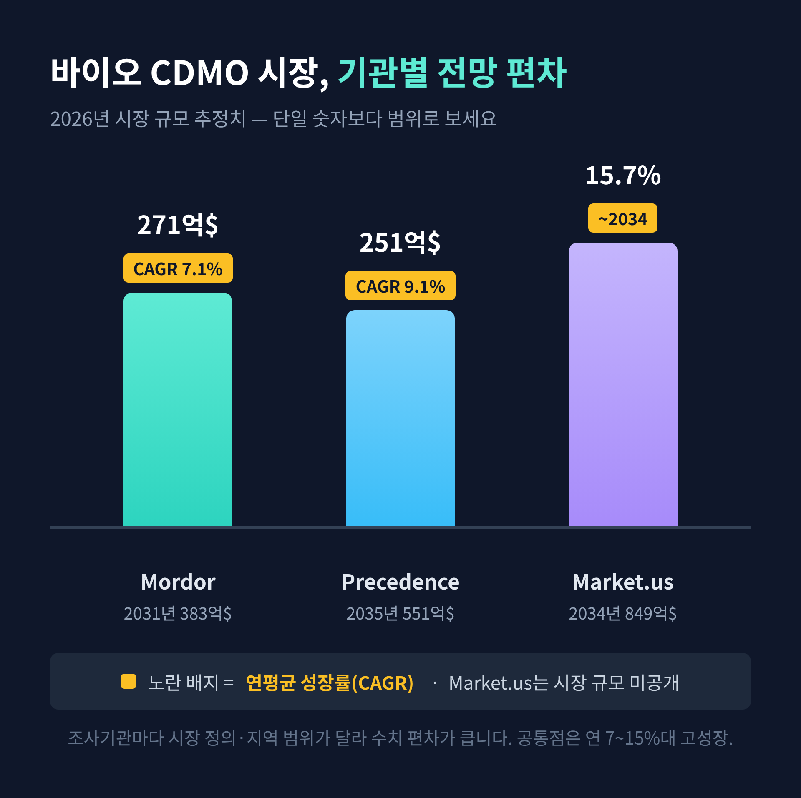

[바이오] 생물보안법과 K-CDMO 2026 — 바이오 공급망 재편이 만드는 기회
미국 생물보안법(BIOSECURE Act)을 두고 한국 CDMO 업계가 들썩이고 있습니다. 이번 글에서는 이 법이 정확히 어디까지 진행됐는지, 그리고 한국 바이오 기업에 어떤 기회를 만드는지 정리해 보겠습니다.
먼저 핵심부터 세 줄로 요약합니다.
- 생물보안법은 2025년 12월 NDAA(국방수권법)에 포함돼 이미 서명·발효됐습니다.
- 다만 발효와 실제 시행은 다릅니다. 조달 금지 효력은 후속 절차를 거쳐 빠르면 2028년 하반기에야 발생할 전망입니다.
- 이 시차 속에서 삼성바이오로직스·SK팜테코·롯데바이오로직스 같은 한국 CDMO가 대체 생산기지로 떠오르고 있습니다.

생물보안법, 무엇을 막으려는 법인가
생물보안법의 취지는 단순합니다. 미국 정부가 '우려 바이오기업'으로부터 장비나 서비스를 사들이거나, 보조금·대출을 주는 것을 제한하는 법입니다.
배경에는 미·중 기술경쟁이 있습니다. 바이오 공급망을 단순한 산업 문제가 아니라 국가안보 차원의 문제로 끌어올린 셈입니다.
한 가지 짚고 넘어갈 점이 있습니다. 규제 방식이 처음 발의안과 최종 법안 사이에서 크게 바뀌었습니다.
2024년 발의안은 우시앱텍, 우시바이오로직스, BGI, MGI, Complete Genomics 등 특정 기업 5곳을 직접 이름으로 명시했습니다. 하지만 위헌 논란 등으로 그 법안은 통과되지 못했습니다.
최종 발효된 법안에서는 이 기업 명단이 빠졌습니다. 대신 두 가지 장치를 두었습니다.
- 미 국방부의 '1260H 리스트'(중국 군사기업 명단)에 오른 기업을 자동으로 우려 기업으로 간주합니다.
- 추가로 더 많은 기업을 우려 기업으로 지정할 수 있는 절차를 만들었습니다.
즉 발효된 법은 기업명을 직접 못 박지 않습니다. 대신 1260H 리스트와 연동되는 구조로 바뀌었습니다. 한국 일부 언론은 여전히 "우려 기업 5곳"으로 묶어 보도하지만, 그것은 2024년 원안 기준 표현이라는 점을 기억해 두시면 좋겠습니다.
발효는 됐지만, 시행은 아직입니다
여기가 가장 오해가 잦은 대목입니다. "법이 발효됐다"는 말과 "실제로 조달이 금지된다"는 말은 다릅니다.
확정된 사실부터 정리하겠습니다.
- 2025년 12월 18일, 트럼프 대통령이 생물보안 조항(NDAA 제851조)이 담긴 2026 회계연도 NDAA에 서명하면서 법으로 발효됐습니다.
- 2026년 6월 8일, 미 국방부가 연례 1260H 리스트를 발표하며 우시앱텍을 신규 등재했습니다. 이 리스트에는 총 188개 중국 군사기업이 들어 있습니다.
다음은 아직 진행 중이거나 미확정인 부분입니다.
| 단계 | 시점(대략) | 내용 |
|---|---|---|
| OMB 시행 가이던스 | 발효 후 180일 이내(≈2027년 6월) | 관리예산국이 시행 지침 발표 |
| FAR(연방조달규정) 개정 | 가이던스 후 1년 이내(≈2028년 6월) | 실제 조달 규정에 반영 |
| 금지 효력 발생 | FAR 개정 후 60~90일 | 1260H 등재 기업은 60일, 기타 우려 기업은 90일 |
정부가 기한을 모두 사용한다고 가정하면, 실제 금지 효력은 2028년 하반기에야 발생할 전망입니다.
기존 계약에는 유예도 있습니다. 효력 발생일 이전에 맺은 계약은 해당 기업에 대한 FAR 개정일로부터 5년간 유예됩니다. 다만 한 가지 예외가 있습니다. 2025년 12월 18일 시점에 이미 1260H 리스트에 올라 있던 기업과의 기존 계약에는 이 5년 유예가 적용되지 않습니다.

우시(WuXi)를 둘러싼 쟁점
이 법의 무게중심에는 중국 CDMO 견제, 그중에서도 우시 그룹이 있습니다.
2026년 6월 8일, 미 국방부는 우시앱텍을 1260H 리스트에 올렸습니다. 근거로는 중국 국유자산감독관리위원회의 간접 지분, 국방과학기술 기관 및 인민해방군과의 간접 연관성을 들었습니다.
우시앱텍은 같은 날 성명을 냈습니다. 이 지정을 "잘못되고 근거 없는" 것이라 반박하며, 재심을 추진하겠다고 밝혔습니다. 다시 말해 우시앱텍의 등재는 지금도 다툼이 진행 중인 사안입니다.
한 가지 더 구분할 점이 있습니다. 우시바이오로직스는 1260H 리스트에 포함되지 않았습니다. 우시앱텍의 자회사·모회사·승계기업이 아니어서, 우시앱텍 등재의 직접 영향권에 있지 않다는 분석입니다.
정리하면 이렇습니다. 우시앱텍은 등재됐으나 재심 중이고, 우시바이오로직스는 아직 명단 밖입니다. 이 둘을 뭉뚱그리면 사실관계가 어긋날 수 있습니다.
시장은 얼마나 큰가 — 숫자는 범위로 보셔야 합니다
바이오의약품 CDMO 시장은 빠르게 성장하고 있습니다. 다만 조사기관마다 시장의 정의와 범위가 달라 수치 편차가 큽니다. 그래서 단일 숫자가 아니라 범위로 받아들이시길 권합니다.
| 조사기관 | 2026년 시장 규모 | 성장률(CAGR) | 전망 |
|---|---|---|---|
| Mordor Intelligence | 약 271억 달러 | 7.14% (2026–2031) | 2031년 383억 달러 |
| Precedence Research | 약 251억 달러 | 9.14% (2026–2035) | 2035년 551억 달러 |
| Market.us | — | 15.7% (2034까지) | 2034년 849억 달러 |
기관별로 갈리지만 공통된 해석은 분명합니다. 바이오 CDMO는 범위에 따라 연 7~15%대로 성장하며, 저분자 의약품보다 빠르다는 것입니다.
성장 동력도 짚어두겠습니다.
- 외주 생산능력에 대한 수요 증가
- 세포·유전자치료제 같은 차세대 치료제의 복잡성 증가
- 자체 시설 구축에 드는 막대한 자본 부담 → 전문 CDMO 파트너로의 이동
수치 편차가 큰 이유는 분명합니다. 조사기관마다 시장 범위와 지역 커버리지를 다르게 잡기 때문입니다. "바이오 CDMO 시장은 정확히 얼마"라고 단정하기보다, 추세를 읽는 편이 낫습니다.

한국 CDMO는 어디까지 와 있나
법의 시차는 길지만, 한국 기업들은 이미 움직이고 있습니다.
삼성바이오로직스
2026년 누적 수주 계약 규모는 약 3조 2천억 원입니다. 글로벌 상위 20개 제약사 중 17개사를 고객사로 확보했습니다. 5공장은 2025년 4월부터 가동을 시작해 램프업이 순조롭고, 2027년 2분기경 본격 매출 인식이 전망됩니다. 6공장은 2026년 연내 착공, 2027년 완공이 목표입니다.
수혜 논리는 이렇습니다. 기존 계약은 유예 기간(보도상 2032년)까지 유지되지만, 신약 개발에 걸리는 평균 기간을 고려하면 새로 맺는 계약은 중국 외 기업을 택할 가능성이 높습니다. 그래서 삼성바이오가 대체 생산기지로 부각되는 것입니다.
SK팜테코 / SK바이오텍
SK바이오텍은 약 3,147억 원을 투자해 세종시에 저분자·펩타이드 생산공장을 증설하며, 2026년 말 가동을 예정하고 있습니다. 수주도 이어집니다. 2026년 5월 스위스 페링제약의 방광암 유전자치료제 원료의약품 계약을 따냈고, 6월 11일에는 글로벌 제약사와 GLP-1 계열 비만치료제 원료의약품 장기공급 계약을 맺었습니다. 이 계약 규모는 최소 1조에서 최대 2조 원 수준으로 알려졌습니다.
롯데바이오로직스
2022년 미국 BMS의 시러큐스 공장을 인수하며 CDMO에 뛰어든 후발주자입니다. 송도 공장 완공으로 생산능력을 키우며, '틈새 수주' 전략으로 승부를 보고 있습니다.
산업연구원은 이렇게 평가합니다. 생물보안법이 NDAA의 일부로 법제화되며 미국 바이오 산업이 국가안보 차원으로 격상됐고, 중국 기업 대체 수요가 늘면서 신뢰도 높은 CDMO에 새로운 기회가 될 것이라는 진단입니다. 실제로 2025년 국내 제약·바이오 기술 수출액은 13조 원을 넘어 전년 동기 대비 15% 증가했습니다.
기회는 분명하되, 한계도 봐야 합니다
좋은 신호만 있는 것은 아닙니다. 몇 가지는 차분히 짚어둘 필요가 있습니다.
가장 먼저, 시차입니다. 실제 금지 효력은 빠르면 2028년 하반기입니다. "법이 발효됐으니 당장 중국 물량이 한국으로 넘어온다"는 식의 해석은 성급합니다.
다음으로, 경쟁입니다. 대체 생산기지를 노리는 것은 한국만이 아닙니다. 일본, 유럽도 같은 기회를 두고 경쟁하고 있습니다.
마지막으로, 불확실성입니다. 우시앱텍은 재심을 추진 중이고, OMB의 우려 기업 명단도 아직 공표 전입니다. 변수가 적지 않습니다.
예전엔 공급망이 '가장 싸고 빠른 곳'을 향했습니다. 지금은 '믿을 수 있는 곳'을 함께 따집니다. 이 변화 자체가 한국 CDMO에 우호적인 흐름인 것은 맞습니다. 다만 그 속도와 폭은 아직 열려 있습니다.
끝으로 한 마디만 더 드리겠습니다.
생물보안법이 한국 바이오에 기회의 문을 연 것은 분명합니다. 그러나 그 문은 단번에 활짝 열리는 종류가 아닙니다.
"발효는 끝, 시행은 시작" — 이 시차를 정확히 읽는 사람이 기회도 정확히 잡을 것입니다.
이 글이 그 시차를 가늠하는 데 작은 도움이 되었다면, 그것으로 충분합니다.
(투자 판단은 전적으로 독자의 몫이며, 이 글은 특정 종목의 매매를 권하지 않습니다.)